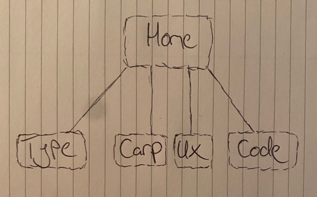

UX Task
The User Experience task requires a visual presentation of the strategy and scope of the design fundamentals website through a flowchart and a wireframe. As well as exploring the experience of potential users that may view my website
User Experience short essay - My website includes lots of white space accompanied with large text and a simple navigation bar to accommodate the user. The potential ‘user’ for my website would be friends, family, Mary, Tom, other lecturers, employers and class mates. My goal is to satisfy the needs of the potential users by providing a smooth and efficient user experience, at the same time to impress them with the work I have completed. My website is intended to function in an impulsive way. This means that the user is not required to think about where something, but instead find what they are looking for with ease. An important requirement of the assignment was to include all the set tasks within the website. These were arranged by each task having its own html page so the user can clearly view the ones they want to without getting confused. Each page has a title and a brief description of the page so the user can decide to view further or click off.
This wireframe above represents page 2 typographic systems. The wireframe clearly displays the exact layout the user would see. The 5 buttons at the top of the page are shifted to the left losing their importance as that the title becomes the main point to catch the user. In addition to this a sub title is displayed underneath giving users a clear description of what they are looking at. All images are displayed evenly making it easy on the users eye. To compliment this a description is attached underneath each image giving the user more infomation relating to the corresponding typographic system

The flowchart above represents the easy navigation the user experiences. The navigation bar allows the user to easily access and switch between the different html pages they wish to view